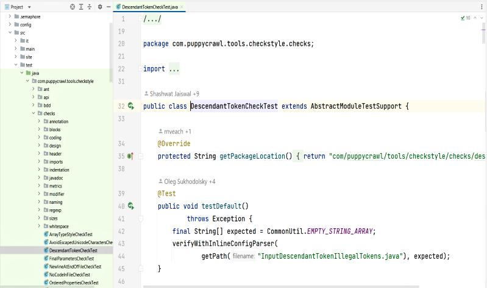

Content
Import Checkstyle Project
If no project is currently open in IntelliJ IDEA, click Import Project on the
Welcome screen. Otherwise, select File > New > Project from Existing Sources


Then Next > Next > ... Until Finish.
Generate sources that a required by checkstyle
by right click over pom.xml file and click on menu "Maven / Generate Sources and Update
Folders"

Debug
Open the Check's source file by double-click on it in a source tree as is shown:

Debug the Check by putting the breakpoint at controversial place (double-click)
on the left part of line number as it is shown:

Open the Test's source file by double-click on it in a source tree as is shown:

Then right-click the corresponding Unit-test file or class definition > Debug
"testName"

Then manage you debug operations F8 (Step Over), Shift+F8 (Step Out),
F7 (Step Into), Alt+F9 (Run to Cursor)
Organize Imports
One of the Checkstyle checks we run on our own code require certain order of import
statements. Few changes in IDE settings are required to help your IDE do it
automatically.
To change formatter settings please go to File->Settings in menu.
Then in the tree go to: Editor->Code Style->Java, open Import tab (follow numbers on a
picture) and apply settings highlighted:

Inspections
Checkstyle has its own very strict set of inspections. To import and enable them go to
Settings -> Editor -> Inspections -> Manage -> Import... and locate file
config/intellij-idea-inspections.xml.

ATTENTION: Not all files in repository should be analyzed.
For example test input files contain numerous violations on purpose.
Our shared inspection scope should be used to exclude such files.
Add custom scope copy file config/intellij-idea-inspection-scope.xml
to .idea/scopes directory.
Command from root of repo is:
mkdir -p .idea/scopes; cp config/intellij-idea-inspection-scope.xml
.idea/scopes/
Now it should be ready to be used in Inspect Code window (Analyse -> Inspect Code):

Disable Auto Indent On Paste
IDEA has its own rules of indentation when pasting code and it applies these rules to
all the lines of the copied code. This may result in wrong formatting of code in many
checkstyle files. A simple solution to this problem is by using the key combinations
Ctrl + Shift + Alt + V or Edit | Paste Simple. However, it is
recommended that these settings be changed by default as shown below